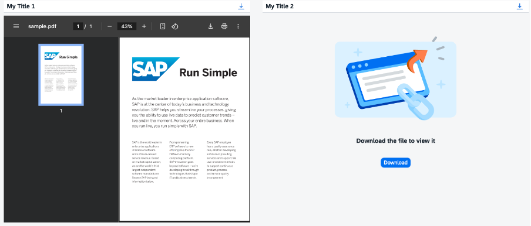

The PDFViewer control displays PDF documents right inside your app.
It can be embedded into your page layout, or you can set it to open in a popup
dialog. In addition, this control allows you to download the PDF documents it
displays.

For more information, see the API Reference and the Sample.
PDF File Source
You can specify the source of the PDF document that you want to display using the
source property that points to a PDF file path. This property
can be set to a relative or an absolute path.
Optionally, you can set the source property to a data URI or a blob
URL in all major web browsers except Internet Explorer and Microsoft Edge. If you
want to use a data URI or a blob URL, you need to make sure that this data URI or
blob URL has been validated in advance. For more
information, see URL List Validation.
Content Caching
PDF documents displayed in the PDF viewer may or may not be cached, depending on the app that uses the PDF viewer control. It's up to you to decide how often the content should be refreshed and whether to use caching or not.
Supported Device Types
The PDF Viewer control is fully displayed on desktop devices only.
On mobile devices, the PDF document is not displayed. Only the toolbar with a download button is visible. Click the download button to download and open the PDF document.
Browser Restrictions
Microsoft Edge (Chromium)2
When the PDF viewer is open in the Microsoft Edge
(Chromium)2 browser, the displayed PDF document may
appear on top of all other page elements. To work around this issue,
insert another iframe element between the PDF
viewer and the rest of the elements on the page.
Data URI paths and blob URLs used as the PDF source are not supported in Microsoft Edge (Chromium)2 browser.
Mozilla Firefox
The sourceValidationFailed event is not fired for PDF documents loaded in the Mozilla Firefox browser.
Safari
Data URI paths and blob URLs used as the PDF source are not supported in Safari.
Embedding the PDF Viewer into a Tab
When
the PDF viewer is embedded into the sap.m.IconTabBar control, the PDF documents
may fail to reload when you switch tabs. To work around this issue, you
can do either of the following:
Set the visibility of the PDF viewer to false when
the user is switching between tabs.
Remove the PDF viewer iframe element from the DOM
each time the user navigates to a different tab. The PDF viewer
element can be removed by calling the
sap.m.PDFViewer#invalidate method.
For more information, see the API Reference:
sap.ui.core.Control.html#invalidate.
Accessibility
Accessibility features available to the user may vary, depending on the version of the Adobe Acrobat Reader installed.
Fillable PDF Forms
Support for fillable PDF forms depends on the browser and device restrictions.